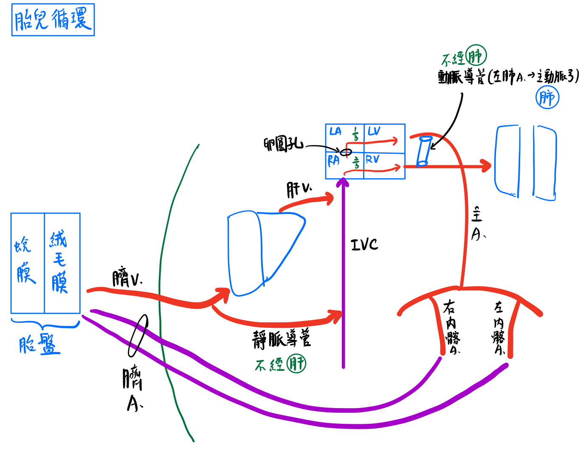
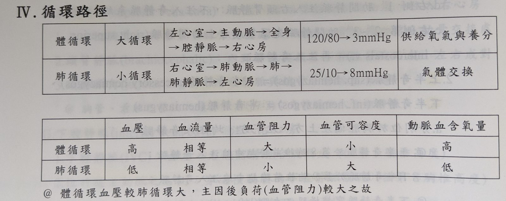

🩸 血管：循環路徑&胎兒循環
胎兒循環[約考一題]
胎盤(placenta)
- 構造：母體之基底蛻膜(子宮內膜的一部分)+胎兒之葉狀絨毛膜等
- 功能：
- 交換物質(O2、CO、營養、含氮廢物、IgG等)
- 產生荷爾蒙(HCG、HCS、P、E、PL等)
動脈導管(ductus arteriosus)
- 位於：★★★★主動脈弓與左肺A之間
- 功能：★將肺A的血(90%)導入主動脈
- 前列素(PGE2、PGI2)：令其保持open
- 慢動素(bradykinin)：令其關閉
臍帶(umbilicalcord)-連結胎盤與胎兒
- 內含3條血管：
- ★臍V. x1：充氧血
- 臍A. x2：缺氧血。
- 氧氣分壓(Po2)：母體子宫A>母體子宫V>臍V>臍A
- 含氧量(Co2)：母體子宮A>臍V(充氧血)>母體子宮V > 臍A(缺氧血)
- 含氣量(Co2)=Hbx1.33×Sat(%)+Po2 ×0.003(cc/dL)
- 母體的血紅素(Hb)有兩種：HbA1(97.5%)；HbA2(2.5%)
- 胎兒的血紅素(Hb)：HbF(對氧的affinity較高→才可以從母體搶氧氣)
[重點]胎兒循環：右→左分流
- 經動脈導管：2/3
- 經卵圓孔(foramen ovale)：★1/3
- 動脈導管：左肺A→主動脈弓。繞道不經肺臓
- ★靜脈導管：臍V. (肝門V左支)→下腔V。繞道不經肝臟
- 含純的充氧血之血管：臍V、靜脈導管
胎盤膜(placental membrane)：隔開母體與胎兒血液
- 融合滋養層(syncytiotrophoblast)
- 細胞滋養層(cytotrophoblast)→最後完全消失
- 絨毛結締組織(connective tissue of villous)
- 胚胎微血管內皮(endothelium of fetal capillaries)

循環路徑

[重點]★[109-1]出生後變化
- ★★★★臍V→肝圓韌帶(round l./ligamentum teres)
- 卵圓孔→卵圓窩(fossa ovalis)
- 靜脈導管→靜脈韌帶(ligamentum venosum)
- 動脈導管→動脈韌帶(ligamentum arteriosum)
- ★★臍動脈→近端：上膀胱A
遠端：內側臍韌帶(medial umbilical lig.) x2 - ★★臍尿管(Urachus)→正中臍韌帶(median umbilical lig.) x1
- ★★下腹壁A/上腹下A.(inferior epigastric a.)→外側臍韌帶(lateral umbilical lig.) x2
📖 書本補充：與筆記不同或筆記沒寫到的地方
⚠️
以下為對照書本後整理，筆記原文未更動。標「筆記 vs 書」的是兩邊寫法不同、建議回頭確認的地方。書中「血管系統」組織學（p.68–71，動脈／靜脈管壁構造）沒有獨立筆記頁，一併放在這裡；微血管與淋巴微管（p.69、72）放在「淋巴系統」那頁。
胎兒血液循環（p.174）
- 書上用「充氧程度」把胎兒血管分級：
- 高：臍靜脈、靜脈導管。
- 中等：下腔靜脈（接上靜脈導管後）、心房、動脈導管。
- 低：上腔靜脈、門靜脈。
- 臍靜脈：右邊消失，左邊與靜脈導管相接；出生後左臍V → 肝圓韌帶。
- 門靜脈：由肝臟下方的右卵黃囊靜脈形成（左邊已消失），出生後不變。
- 進入右心房的充氧血（來自臍V）和缺氧血（來自上腔V等體靜脈）大致不混合：前者經卵圓孔到左心房，後者經右心室、肺動脈幹進入動脈導管。
- 因此：升主動脈的血比降主動脈含氧多（降主動脈加入了動脈導管來的缺氧血）；右心室的缺氧血仍混了一部分充氧血，所以含氧比上、下腔V的缺氧血多一些。
- 書上寫動脈導管連接主動脈弓與肺動脈幹（108-1-35），源自左側第六動脈弓（104-2-31 解析）；筆記寫「主動脈弓與左肺A之間」，指的是同一位置（肺動脈幹分叉處靠左肺A起點），考題選項會用「肺動脈幹」或「肺動脈」。
- 書的提示：右喉返神經繞右鎖骨下A；左喉返神經才繞過動脈韌帶（104-2-31 選項陷阱）。
- 胚胎第四週注入心臟的三組靜脈：卵黃囊靜脈、臍靜脈、總主靜脈（注入靜脈竇）；子宮內膜靜脈回到母體（112-2-35）。
血管結構之比較（p.68）
| 構造 | 動脈 | 靜脈 | 微血管 |
|---|---|---|---|
| 管腔 | 小 | 大 | 約一個紅血球直徑 |
| 內皮 Weibel-Palade 氏體 | 有 | 無 | 無 |
| 內彈性膜 | 明顯 | 不明顯 | 無 |
| 中層平滑肌 | 非常發達；會合成細胞外基質 | 不發達；數層環走 | 無（小動脈平滑肌可形成微血管前括約肌） |
| 外彈性膜 | 不明顯或無；中層內無纖維母細胞 | 不明顯或無 | |
| 外膜層 | 不發達 | 發達；大型靜脈有縱走平滑肌 | 無 |
- 書的提示：
- 瓣膜只出現在靜脈。
- 大型動脈和靜脈的外膜層都有血管滋養管及血管神經。
- Weibel-Palade 氏體只出現在動脈的內皮細胞內（可儲存 von Willebrand 因子＝第八凝血因子）。
- 下腔靜脈：中膜和外膜都有平滑肌，中膜環走、外膜縱走，且外膜比中膜厚（111-1-41）。
- 小動脈與小靜脈：都有單層內皮；小動脈有平滑肌但無彈性板，兩者都沒有內彈性膜；微血管前括約肌只在小動脈接微血管處（111-2-41）。
彈性與肌肉動脈（p.70）
- 彈性（傳導）動脈＝主動脈及肺動脈（107-1-39 也把頭臂動脈算彈性動脈）；肌肉（分布）動脈＝股動脈、肱動脈等。
- 內彈性膜：彈性動脈不明顯、肌肉動脈明顯；彈性板的穿孔：彈性動脈明顯、肌肉動脈很少。
- 中層平滑肌分布在彈性板之間；兩者外彈性膜都不明顯。
- 肌型動脈最薄的一層是內膜，中膜主要是平滑肌（110-2-41）。
📝 書中歷屆考題（點選答案作答）
104-2-31p.175
下列有關動脈導管 (ductus arteriosus) 之敘述，何者正確？
💡 其他三個選項都錯在「右側」，應該是左側。
108-1-35p.175
有關動脈韌帶 (ligamentum arteriosum) 的敘述，何者正確？
💡 臍動脈部分閉鎖形成的是內側臍韌帶（外覆內側臍襞），不是動脈韌帶。
109-1-20p.175
動脈韌帶 (ligamentum arteriosum)，位在那兩條血管之間？
108-1-20p.175
在胎兒時期，卵圓孔 (oval foramen) 可溝通下列何者？
109-2-35p.175
胎兒循環中，下列何種血管的含氧量最高？
💡 含氧量高低：臍靜脈 → 主動脈 → 臍動脈 → 肺靜脈。
112-2-35p.175
胚胎第四週時，下列那一條血管不注入胎兒心臟？
💡 子宮內膜靜脈會回到母體。
107-1-40p.68
下列何種構造之主成分不是由膠原組織 (collagen tissue) 構成？
💡 蒲金氏纖維是心肌特化而成，不是一般的纖維；別和小腦皮質第二層的蒲金氏細胞搞混。
111-1-41p.69
下列有關下腔靜脈 (inferior vena cava) 管壁組成的敘述，何者正確？
💡 大靜脈的中膜和外膜都有平滑肌，分別環走和縱走；彈性內膜和外膜是動脈的特徵。
111-2-41p.69
下列有關小動脈 (arteriole) 和小靜脈 (venule) 之敘述，何者正確？
💡 兩者外有平滑肌但無彈性板，也都沒有彈性內膜；微血管前括約肌只在小動脈接微血管處。
98-1-36p.71
"Weibel-Palade 體 (Weibel-Palade body)" 主要位於下列何種細胞？
107-1-39p.71
下列何者不屬於彈性動脈 (elastic artery)？
110-2-41p.71
有關肌型動脈 (muscular artery) 的敘述，下列何者正確？
💡 肌型動脈最薄的是內膜（一層內皮加結締組織）；中膜主要是平滑肌，彈性板不明顯。